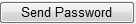

Users:Details
From Help wiki
Main Page → System / Users → Details | KPIs | Password | Logins | 2 Factor Authentication → Log in with Microsoft Account
Contents |
Overview
You can create, edit and suspend users within the Users function. Drivers are managed separately within the Drivers screens.
In the Users area, you can allocate a user to a Workgroup, select KPI's for the user which are viewed on the  Home page.
Home page.
Setting up and resetting passwords are also managed here.
Only System Administrators can manage Users.
System access by users is recorded in the gb_user_access_log table This records if the access was a login, logout, fail or reset and also records the User Agent string. Where the user's role is 'web-services', only access failures are recorded.
Field Descriptions
| Field | Type | Description | [table]field |
|---|---|---|---|
| Column One | |||
| User ID | Unique system ID | ||
| Workgroup | Selects a "Workgroup" - used for KPI grouping on the Home screen. | ||
| Role | Select the Role that is applicable for this user. Changing the role will delete any active sessions held by the user and log the user out. | ||
| Restrict Table | The system table that the user is restricted from is auto populated depending on the role selected | ||
| Restrict Key | Lookup | Enter or lookup the key that the Fleet Manager, Group Manager, Group Channel Manager or Channel Manager is to be restricted to. Only records that are linked to the restrict key can be viewed by the user. Inactive channels are displayed in the lookup screen with a pink background. If you want to restrict the access of a Fleet Manager or a Group Manager further, leave this blank and use the Restrict Range feature. | |
| User Login | Enters a User Login, eg: abmanager. It could be 25 characters long and typically a protocol is determined for user logins - such as initial+surname. The User Login is used in various user selections lists such as Quotes "A/C Manager" and Contracts/Terminate "Due Off Quote Manager". Some system logins such as '_fbt_dec_' exist to enable processes such as Fbt Declaration Emailing, or '_password_reset"_' for Auotmated password resets. System logins cannot be deleted and some fields may not be updated by general users. | ||
| Temporary Password | Check box Display only | This field is only shown if the Temporary Password feature is enabled. It is checked if the user has never logged in, or their password has been re-set by a System Administrator. When checked, the user will be directed to the Users / Password tab to change their password when they next log in. In normal circumstances, it will display as un-checked. The Temporary Password feature is enabled when [gb_controls]temporary_password_flag is set to 'yes'. | |
| Password Expiry Days | Enter the number of days the same password can be used by this user, or accept the default value that is stored in the Roles / Details "Password Expiry Days" field. When the expiry is reached, the user is prompted to change their password when the start to log in. Access to this field can be Role Restricted. Update this to 'display only' if you want to enforce the Roles / Details "Password Expiry Days" here. | ||
| Name | Enter users Name (this is auto populated as client contact for Fleet Manager roles) | ||
| Enter the email address of the user (this is auto populated as client contact for Fleet Manager roles). Multiple email addresses can be entered by adding a semicolon (;) to separate each email address. Leave no spaces in-between. | |||
| Status | Active, Suspended or Locked. 'Active' users can log into the Catch-e system and the Client wiki. 'Suspended' users may not. A 'Locked' user has tried 3 times to log on and is now locked-out. Visit the Resetting Passwords page about how to reset the Status. | ||
| Last Login | Displays the date and time that the user last logged into the system. If the user has never logged into Catch-e, this field displays "Never". | ||
| KPI Access Other Users | If ticked the user can view other users KPI data. Not available for External users. | ||
| KPI Access Other Workgroups | If ticked the user can view other workgroups and their users. Not available for External users. | ||
| Column Two | |||
| Organisation | Enter the Organisation the user belongs to. If a new Group or Fleet Manger is being created using the "Restrict Table" function (although not "Restrict Range"), then the name of the user's Group or Company will populate in this field automatically. | ||
| Report Queue Notification | This checkbox can be used for both internal and external users. Where the 'Report Queue' flag has not been selected on the system Reports and Standard Reports screens, and exceeds the run time allocated in the Global Control report_queue_timeout_to_background, an email will be sent to the User requesting the report that it is available for retrieval from the Report Queue screen. Where the checkbox is OFF, no email notification will be sent. | ||
| Read Only Access | This check-box can be used for both internal and external users. If the box is ticked ON, the user has access to view screens, print documents and export reports and files. No system data can be altered in any way. Only the screens that are available to the selected role are available. Note, the Fleet / Import Data menu option is removed. | ||
| Restrict Range | This check-box can be used for Fleet Manager and Group Manager roles when some limitation on their data access is required. If the box is ticked ON, a new set of selection boxes becomes available. They are Client Groups, Clients, Client Divisions, Client Cost Centres, States. Changing the range for an active user will delete all its session and log the user out. | ||
While creating a new user, a password validation is done to see the password justifies all the set rules, For eg: length of password, letters required, numbers required, upper or lower case required, non-dictionary word required etc. A password shown in plain text means it is a temporary and user will be asked to change it to permanent password on its next login.
Action buttons
| Field | Description |
|---|---|
| Your System Administrator clicks ‘New’ and fills in the fields. | |
| Your System Administrator can also edit current users and suspend users by searching for a user and selecting the ‘Edit’ button. Passwords can be re-set by the system administrator as well as edited on the Password screen. | |
|  | When clicked, an email addressed to the user with their login and password details embedded is available to send. This is only available when the Temporary Password feature is set-up and a temporary password is in use. One the password is changed, this button disappears. |
| Reset | When clicked, a users password can be reset. If the "Temporary Password" feature is enabled, a random password can be generated. |
Validations and Alerts
| Alert | Comments |
|---|---|
| Login | |
| Please contact your System Administrator to check your Channel is linked to one Company | Channel Accounts role requires a 1:1 relationship set up with the following [table]field.
[gb_companies]company_id to [fm_channels]company_id |
| Send Failed! | Add a record in Global Control mail_sender_address |
System Notes
- 5601: New role - Channel Manager. Live 28/06/2012.
- 6263: User password enhancements. Live 07/12/2012.
- 6957: Increase user login from current 12 characters to 25 characters. Live 12/06/2013.
- 8958: Add Dashboard Charts to KPI Screen. Live 01/05/2014
- 8982: Integrate existing KPI's & screens into cockpit. Live 01/05/2014
- 8981: Produce new KPI Charts and Graphs. Live 01/05/2014
- 7002: "Organisation" value disappears when "Role" is changed in Users screen. Live 23/09/2014
- 8425: Automated Lost Password Recovery. Live 08/10/2015.
- 13280: T51 Terminate session if access rights change. Live 29/06/2016.
- (DEV-21003) Give Fleet Managers access to the Clients / Divisions tab. Live 25/05/2020
- (DEV-21156) Temporary Password Feature is not functioning. 08/08/2020
- (DEV-21109) Add Channel Filter to Clients, Users and Payments. 07/09/2020
- (DEV-21192) Increase password field input length to 64 chars. Live 05/10/2020
- (DEV-21272) System error when user is locked. Live 04/12/2020
- (DEV-21351) Make User - Password Expiry Days field read only. Live dd/03/2021

{kind=link}